1. client提交app，master启动driver
1.1 图
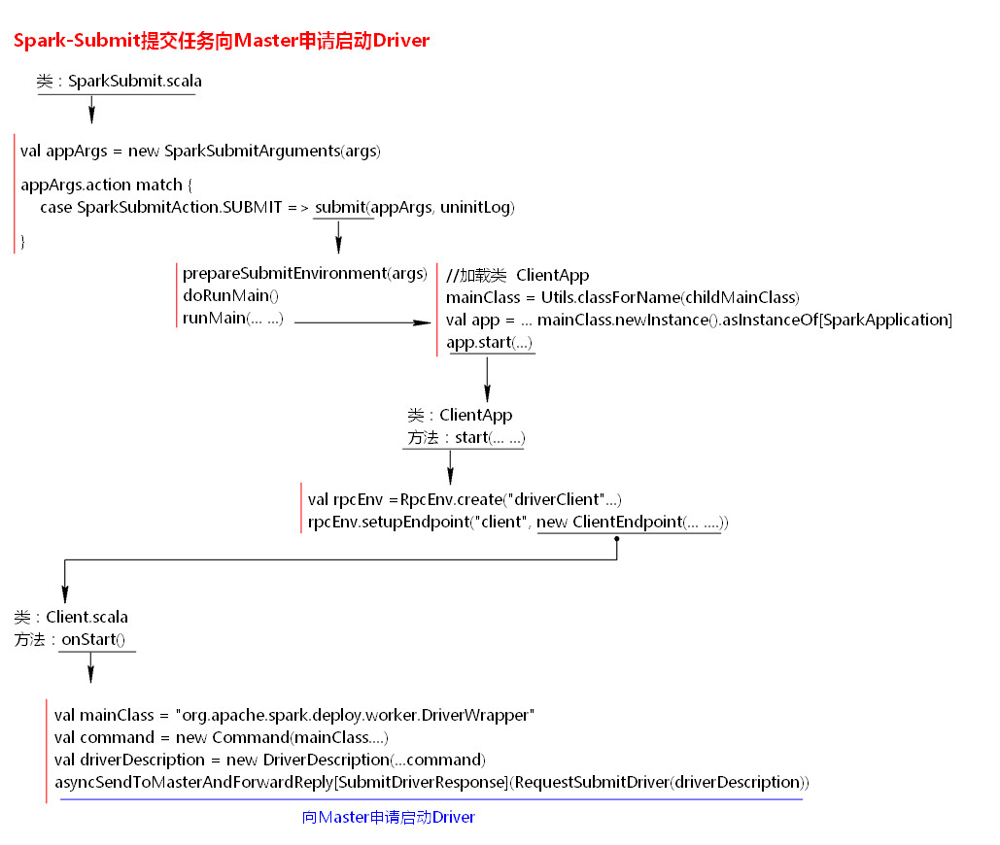
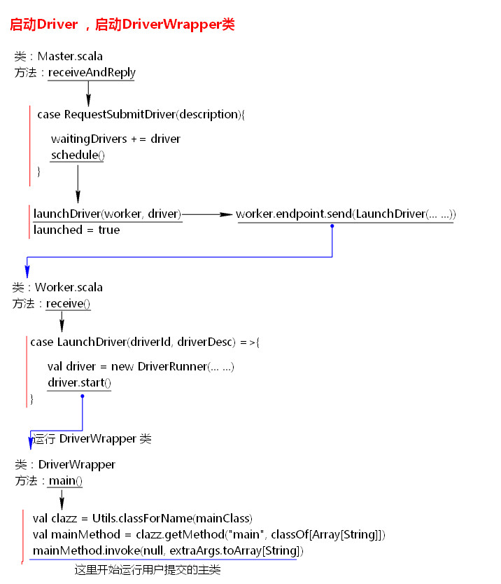
1.2 Master、Worker、SparkSubmit都是deploy包下
1.3 在client提交时，也就是执行spark submit -xxx -xxx 时，client会启动一个进程叫SparkSubmit，会执行一个类的main
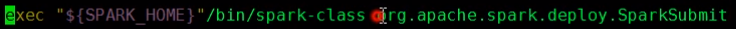
1.4 处理参数，是否打印参数的信息，根据不同action执行不同方法，默认为SUBMIT
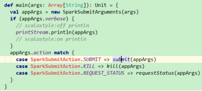
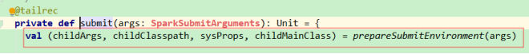
1.5 prepareSubmitEnvironment 准备提交的环境，里面会设置包括集群管理器在内的多种运行设置，之后会把设置封装为一个Tuple4，第三个元素childMainClass会根据master url设置启动类，如果是yarn cluster模式，就设置为org.apache.spark.deploy.yarn.Client
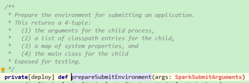
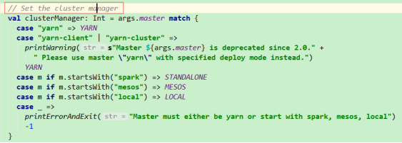
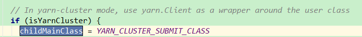
1.6 doRunMain - runMain
1.6.1 通过反射创建类，chidlMainClass转为mainClass
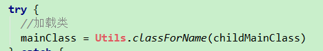
1.6.2 将mainClass 映射成SparkApplication对象
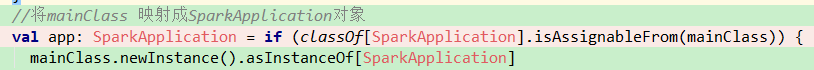
1.7 执行app的start方法，创建RPC环境，把client对应的EndPoint注册到RPC环境中
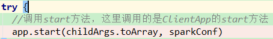
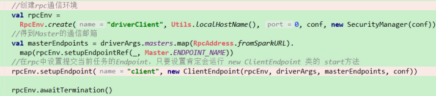
1.7.1 ClientEndpoint的onStart方法，将DriverWarpper封装到Command中，然后再封装到driverDescription，然后向Master申请启动Driver,Master中的 receiveAndReply 方法会接收此请求消息
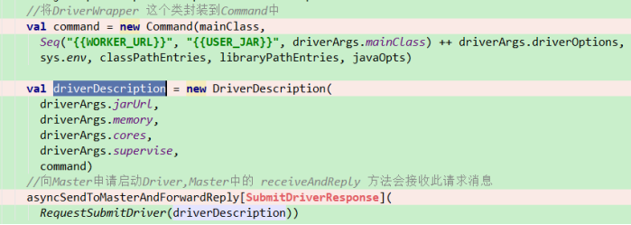
1.8 maser接收到请求后
1.8.1 先创建一个driver对象
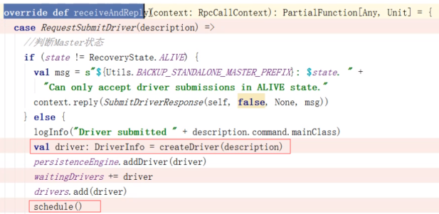
1.8.2 执行schedule，也就是调度。先打散worker，遍历worker，判断当前worker能否启动driver==》worker的选择是随机的。最后启动启动driver。
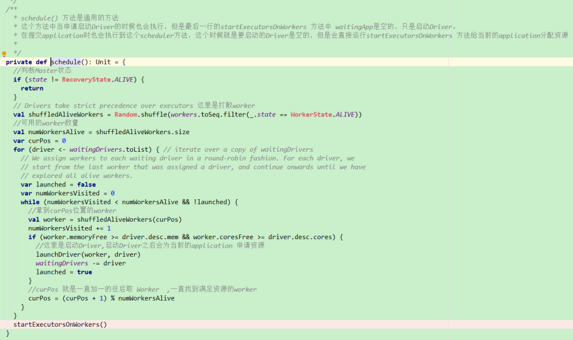
1.8.3 定好worker后，执行launchDriver，给worker发送消息启动driver，worker的RPC环境中的receive会一直处于阻塞状态监听是否有消息发来
{1} driver.start启动的就是前面command中封装的mainClass，command是用来封装submit命令行信息的对象。
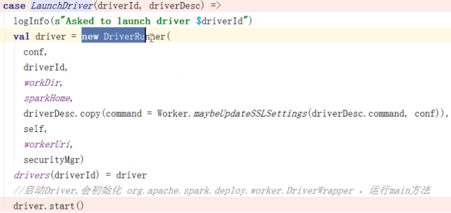
1.8.4 执行driver.start。driver用DriverWrapper包装，DriverWrapper会真正执行提交的jar中的main，也就是执行提交的任务。开始new SprkConf和SparkContext
{1} driver中的mainClass和client的mainClass不是一回事
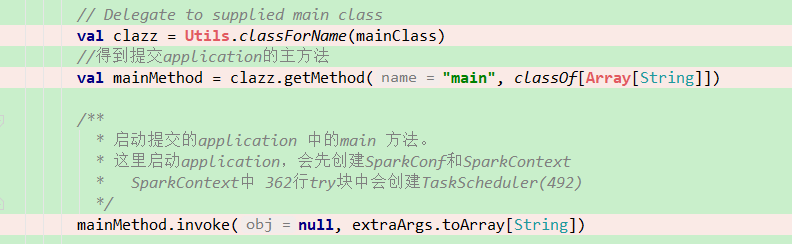
{2} 此时会有疑问，master、worker、client的EndPoint都注册了，driver的呢？要在new SparkContext时才注册